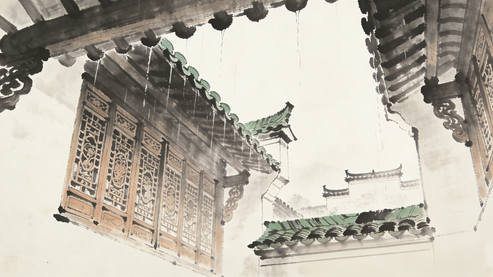

序
序言 Preface
一方天井，四水归堂
徽派建筑之魂
在徽州的粉墙黛瓦之间，藏着一方通向天空的窗——天井。
窗子很小，小得容不下一个人进出；天井很大，大得装得下一整个天空。它是徽州老房子的“心”，是深宅大院中唯一敢于敞开胸襟、仰望苍穹的地方。每逢雨天，四面的屋檐将雨水引入天井，形成“四水归堂”的奇观——这不是简单的排水，而是徽商“肥水不流外人田”的财富密码，是“财源滚滚归家来”的世代祈愿。
天井，是徽州人写给天空的情书。
天井还是徽州女人的守望台。当丈夫背着包袱雨伞远走他乡，徽州女人便开始了日复一日的空房独守。更深夜静，月光如洗，她只能对着天井托寄一缕相思；狂风大作，雷电交织，娇小的身躯只能依偎着软绵的被衾。直到有一天，青鸟从天井飞落，带来远方的音讯……天井见证了太多徽州女人的青春、相思与白发。
天井，是徽州人写给天空的情书。
天井还是徽州女人的守望台。当丈夫背着包袱雨伞远走他乡，徽州女人便开始了日复一日的空房独守。更深夜静，月光如洗，她只能对着天井托寄一缕相思；狂风大作，雷电交织，娇小的身躯只能依偎着软绵的被衾。直到有一天，青鸟从天井飞落，带来远方的音讯……天井见证了太多徽州女人的青春、相思与白发。
序言续 Preface - Continued
晴天，阳光从天井洒落，在青石板上铺成温暖的光斑；雪天，万千六边形精灵争相涌入，把清石板染成洁白。此时，老宅的主人总会捋须感叹：“四水归门堂，瑞雪兆丰年。”这不仅是诗意的咏叹，更是一个家族的期盼——期盼远走沪杭经商的儿郎早日归家，期盼天井之下的人丁兴旺、世代绵延。

图 / 徽州深宅天井实景
从功能上看，天井解决了封闭高墙内的采光、通风问题，其高深形态形成的"拔风"效应，能有效调节室内微气候。从文化上看，天井体现了"天人合一"的哲学追求，既是建筑中"以虚带实"的留白，也是人与天地对话的精神空间。
内敛的徽州人开着小小的窗子，谨小慎微地做人，却在磨砺中开阔了心胸。这，或许就是天井真正本真的意义。今以是书，献与天下爱徽州者。愿君在翻阅之间，能透过这一方天井，看见徽州人的智慧、坚守与深情。
是为序。
内敛的徽州人开着小小的窗子，谨小慎微地做人，却在磨砺中开阔了心胸。这，或许就是天井真正本真的意义。今以是书，献与天下爱徽州者。愿君在翻阅之间，能透过这一方天井，看见徽州人的智慧、坚守与深情。
是为序。
壁
第一章 Chapter I
壹
内敛的堡垒
防御与宗法交织的空间起源
粉墙黛瓦马头墙，厅堂左右有厢房。
高墙深院小窗户，飞檐翘角花格窗。
肥梁瘦柱内天井，四方财水归明堂。
—— 流传于歙县、黟县的民间建筑口诀，这句民谣是徽州民间对徽派建筑核心特征的高度概括，精准描绘了天井在整体格局中的位置与功能。
家有天井一方，子子孙孙兴旺。
四水归明堂，肥水不外流。
—— 徽州民间祈福歌谣，承载了徽州人对天井的情感寄托与风水信仰，是天井从建筑功能升华为文化符号的直接体现。
高墙深院小窗户，飞檐翘角花格窗。
肥梁瘦柱内天井，四方财水归明堂。
—— 流传于歙县、黟县的民间建筑口诀，这句民谣是徽州民间对徽派建筑核心特征的高度概括，精准描绘了天井在整体格局中的位置与功能。
家有天井一方，子子孙孙兴旺。
四水归明堂，肥水不外流。
—— 徽州民间祈福歌谣，承载了徽州人对天井的情感寄托与风水信仰，是天井从建筑功能升华为文化符号的直接体现。
徽州地处皖南山区，“七山一水一分田”。在极其有限的平地上，为了聚族而居，民居往往比邻而建，密度极高。
古代徽商富甲一方，常年在外经商，家中多留妇孺老弱。出于防范盗贼与火灾蔓延的绝对需求，徽州人将房屋四周的实墙砌得极高，对外几乎不留大窗。这种“重檐高墙”的格局，在提供了极致安全感的同时，也使内部空间陷入了窒息。
Chapter I Continued
传统徽派民居习惯于在平面上横向扩张，形成“三间开”或“五间开”的多进院落。随着深度的增加，光线逐渐衰减。如何在不见天日的堡垒中引入大自然的生机？
于是，“天井”应运而生。它像是工匠在顶部精巧切开的一扇天窗，成为唯一与外部世界沟通的“气口”。通过这一道长方孔洞，光、风与雨水得以进入这方内向的宇宙。
这种设计不仅解决了生存的基础物理问题，更在宗法制度森严的徽州，塑造了一种绝对私密且向心凝聚的家庭氛围。天井暗合 “四水归明堂” 的风水观念，象征财富汇聚，也成为聚族而居的家族情感核心，在宗法社会中维系着家族凝聚力。
于是，“天井”应运而生。它像是工匠在顶部精巧切开的一扇天窗，成为唯一与外部世界沟通的“气口”。通过这一道长方孔洞，光、风与雨水得以进入这方内向的宇宙。
这种设计不仅解决了生存的基础物理问题，更在宗法制度森严的徽州，塑造了一种绝对私密且向心凝聚的家庭氛围。天井暗合 “四水归明堂” 的风水观念，象征财富汇聚，也成为聚族而居的家族情感核心，在宗法社会中维系着家族凝聚力。
仰望 Perspective

高墙隔绝尘世喧嚣。图 / 天井仰视
光影 Light & Shadow

一束天光，划分阴阳。图 / 天井正午
光
第二章 Chapter II
贰
阴阳交汇
天然的建筑光学调光器
“明堂暗室”，是徽派建筑独特的光影美学。天井是光之容器，它通过精密的物理反射，将烈日驯化为流光。
在夏季，太阳高度角大。由于马头墙极高，直射的烈日被重檐高墙阻挡，无法直接暴晒到底层的木质厅堂。阳光打在天井四周粉刷雪白的墙壁上，经过石灰颗粒的细致折射，将刺眼的光线驯化。
这种漫反射不仅均匀地照亮了原本昏暗的中堂，更因其间接性而让室内保持了低于外界数度的体感。这不仅是古人的建筑智慧，更是一种“光而不耀”的中正美学。
这种漫反射不仅均匀地照亮了原本昏暗的中堂，更因其间接性而让室内保持了低于外界数度的体感。这不仅是古人的建筑智慧，更是一种“光而不耀”的中正美学。
Chapter II Continued
幽暗的内堂（阴）与明亮的天井（阳）形成了强烈的对比。古人云“阴阳交泰方能生生不息”。随着一日之内太阳在苍穹的位移，光束在木梁与屏风上缓缓爬动。
天井在这里充当了精准的光学传感器。在微雨之晨与落日黄昏，天井赋予了老宅截然不同的表情：或清冷宁静，或温暖而肃穆，为凝固的木构建筑注入了生动的视觉节奏。
天井在这里充当了精准的光学传感器。在微雨之晨与落日黄昏，天井赋予了老宅截然不同的表情：或清冷宁静，或温暖而肃穆，为凝固的木构建筑注入了生动的视觉节奏。
半明半暗，乃见天地。
水
第三章 Chapter III
叁
四水归堂
理水哲学与微观理学
水聚天心，财不外流。
—— 徽商信条
天井有明堂，财气不外淌。
—— 休宁民间风水谚语
天井檐滴雨，儿孙绕膝喜。
一方天井纳天光，半盏清茶话家常。
—— 生活歌谣
“搞什么名堂”（搞 mai ai 名堂）语源出自天井“明堂”。
—— 趣闻轶事
—— 徽商信条
天井有明堂，财气不外淌。
—— 休宁民间风水谚语
天井檐滴雨，儿孙绕膝喜。
一方天井纳天光，半盏清茶话家常。
—— 生活歌谣
“搞什么名堂”（搞 mai ai 名堂）语源出自天井“明堂”。
—— 趣闻轶事
在徽商的宇宙观里，“山主人丁水主财”。水，不仅是生命的源泉，更是财富的具象化身。
巧妙的屋顶设计是徽州理水哲学的核心。天井四周的屋面皆被设计为向内倾斜的坡面，构成漏斗状的形态。每逢降雨，雨水绝不会溢流向外，而是顺着四面黛瓦，如珍珠断线般整齐地汇聚于院落中央的“明堂”。
Chapter III Continued
这便是闻名于世的“四水归堂”布局。这不仅是高效的物理排水系统，在资源稀缺的内陆山区，雨水亦被收集用于生活与防火。而在徽商的商道逻辑中，这也象征着“肥水不流外人田”。
听雨看漏，在天井中静观财富从天而降，落入长满青苔的石槽。这种与自然韵律高度和谐的居住方式，既安妥了徽商追求积累的心理基石，也成就了徽派古村落连绵不绝的生动水韵。
听雨看漏，在天井中静观财富从天而降，落入长满青苔的石槽。这种与自然韵律高度和谐的居住方式，既安妥了徽商追求积累的心理基石，也成就了徽派古村落连绵不绝的生动水韵。
财富 Wealth

水利万物而不争。图 / 雨落屋檐
气流 Microclimate

冷热交替，吐故纳新。图 / 拔风效应
风
第四章 Chapter IV
肆
天然呼吸
基于“烟囱效应”的微气候调节
如果说水缸是徽派建筑的胃，那天井就是它的肺。在没有电力的古代，它是应对酷暑最精妙的生态机器。
高耸的马头墙与深陷的天井共同构成了一个巨大的竖向通风系统。物理学上的“热压通风”（烟囱效应），在这里被古人发挥到了极致。
即便在烈日当头的酷暑，虽然屋顶处空气受热膨胀并向上排散，但天井底部却阴凉宜人。这种自然的底部负压，源源不断地从阴凉的门缝与巷道中抽取冷气补充，形成了持续且清爽的循环流动力。
即便在烈日当头的酷暑，虽然屋顶处空气受热膨胀并向上排散，但天井底部却阴凉宜人。这种自然的底部负压，源源不断地从阴凉的门缝与巷道中抽取冷气补充，形成了持续且清爽的循环流动力。
Chapter IV Continued
这种自然的吐故纳新，使得身处深宅大院的人们，无需借助外力即可获得流动的活氧。它不仅带走了室内的潮湿与烟尘，更调节了微观区域的温湿度。
天井，作为这桩生命有机体的“呼吸接口”，确保了在最密闭的空间中，依然能呼吸到来自皖南山林的最纯净气息。这不仅是智慧的生存手段，更是徽派建筑天人合一的核心证明。
天井，作为这桩生命有机体的“呼吸接口”，确保了在最密闭的空间中，依然能呼吸到来自皖南山林的最纯净气息。这不仅是智慧的生存手段，更是徽派建筑天人合一的核心证明。